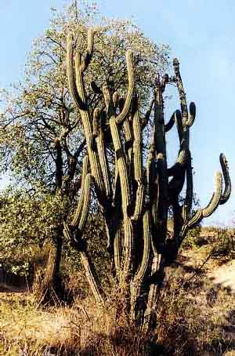
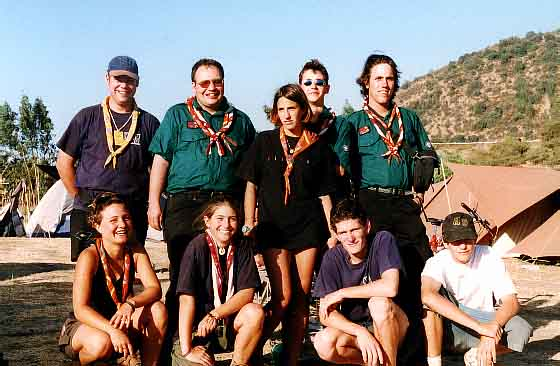
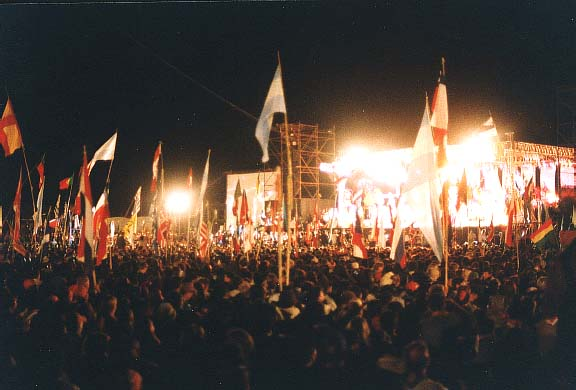
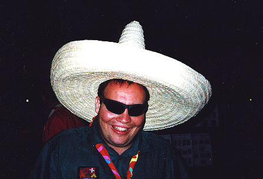

Dezember 1998 / Januar 1999
Alle vier Jahre findet das Jamboree statt - ein Pfadilager, wo sich mehrere tausend Pfadis aus der ganzen Welt treffen und gemeinsam dem Pfadfindertum frönen.

Diesmal versammelten sich ca. 34000 Pfadis in Picarquin, in der Nähe von Santiago de Chile, unter der teufelhaftig brennenden Sonne Südamerikas. Aus der Abteilung AL4 Buchs nahmen ganze zehn Leute teil - als Teilnehmer, als Truppleiter oder als Dienstrover (d.h. Sklaven). Um Weihnachten herum wurden in Zürich die Flugzeuge mit Schweizer Pfadis vollgestopft, alle vorbereitet, mehr als zwanzig Stunden im Flugzeug zu sitzen. Also kam man schon völlig übermüdet beim Lagerplatz an, wo tausende Pfadis in Uniformen aller möglicher Farben und in allen möglichen Sprachen "Guten Morgen" riefen. Die Antwort war immer ein perfekt spanisches "Hola", und dieses Spanisch entwickelte sich je länger je mehr als ein grosses Hindernis, beim gemeinsamen am-Frieden-bauen. Aber solche Kleinigkeiten wurden bald unerheblich, Kontakte mit Leuten aus allen Erdteilen wurden blitzschnell geknüpft, und das gemeinsame Arbeiten und vor allem auch das gemeinsame in-der-Sonne-liegen-und-sich-verbrennen wurde nur noch genossen. Höhepunkte waren sicherlich die Eröffnungs-, die Neujahrs- und die Abschlussfeier, wo sich alle Pfadis in einer riesigen Arena inmitten des Lagerplatzes versammelten und gemeinsam das Jamboree-Lied zum besten gaben...
Leider war der ganze Spass nach etwas mehr als zehn Tagen vorbei, und letzte Adressen wurden ausgetauscht. Anschliessend begaben sich alle Teilnehmer aus Buchs mit verschiedenen Anschlussprogrammen in ganz andere Teile Chiles. Expeditionen in die Atacama-Wüste (mit 40 Grad im Schatten, aber es gibt dort keine Schatten),
River-Rafting und Trekking in der Nähe des Vulkans Osorno oder Nachlager mit chilenischen Pfadis - die Tage nach dem offiziellen Jamboree waren genauso spannend wie das Hauptlager selbst. Doch auch diese Programme neigten sich bald dem Ende zu, und nach einigen Tagen Aufenthalt in Santiago de Chile gings dann endgültig zurück in die Schweiz, wo einige der Buchser Pfadis sich schon entschlossen, in vier Jahren am nächsten Jamboree in Thailand teilzunehmen...